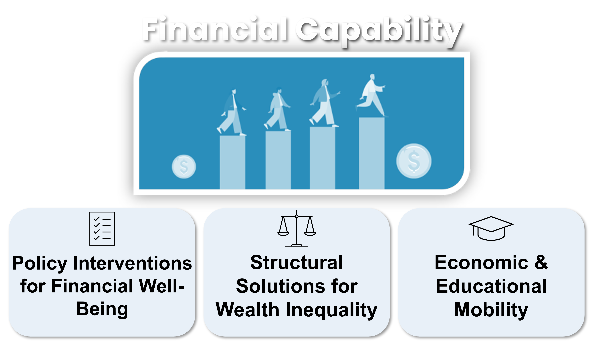

My research as a social policy scholar is dedicated to advancing financial capability and promoting financial well-being and social equity through evidence-based policy. I investigate how institutional structures and policy interventions empower individuals and families to achieve financial security. This page provides an overview of my work across three interconnected themes.
1. Evaluating Policy Interventions for Household Financial Well-Being
I examine the impact of specific policy interventions and financial products on families' ability to withstand economic shocks, manage debt, and access mainstream financial services, thereby enhancing their overall financial security.
-
Job loss during COVID-19 on early retirement withdrawals: A moderated-mediation analysis
-
The Child Tax Credit Expansion and Financial Well-Being: Evidence from Families’ Emergency Savings and High-Cost Financial Resource Usage
-
Access to Employer Benefits and Financial Insecurity Among Frontline Healthcare Workers
-
Student Loan Policies and Payments during the COVID-19 Pandemic: Closing the Gap or Widening Inequalities?
-
The Impact of Grocery Store Rewards Cards on Saving and Asset Accumulation in Children’s Savings Account Programs
-
A Cross-Sectional Examination of Educational Expectation Among Welfare Users in an Asset Building Program
2. Developing Structural Solutions for Wealth Inequality and Poverty
I investigate systemic issues contributing to wealth disparities and poverty, proposing structural reforms, policy platforms, and innovative pathways to foster economic opportunity and mobility for disadvantaged groups.
-
Historical Harms and Racial Wealth Inequality: Evidence from Homeownership and Retirement Savings Accounts
-
A Policy Platform to Deliver Black Reparations: Building on Evidence from Child Development Accounts
-
How Did Reskilling During the COVID-19 Pandemic Relate to Entrepreneurship and Optimism? Barriers, Opportunities, and Implications for Equity
-
Who Stays Poor and Who Doesn’t? An Analysis Based on Joint Assessment of Income and Assets
3. Fostering Intergenerational Economic and Educational Mobility
I explore how policies and interventions, particularly asset-building programs like Children's Savings Accounts, influence educational outcomes, aspirations, and the long-term economic trajectories of children and families, emphasizing the role of financial capability in promoting intergenerational mobility.
-
The Role of Children’s Savings Accounts in Promoting Savings for College Among Welfare Recipients: The Case of Harold Alfond College Challenge (HACC)
-
Using Children’s Savings Accounts and Early Awards to Build College Savings among Welfare Recipients: The Case of Promise Scholars
-
A Step Toward Measuring Children’s College-Bound Identity in Children’s Savings Accounts Programs: The Case of Promise Scholars
-
Examining Parental Educational Expectations in One of the Oldest Children’s Savings Account Programs in the Country: The Harold Alfond College Challenge
This page only lists peer-reviewed publications. For more information about other publications and ongoing work, see also: CV · Google Scholar